Unpacking the brief
Brief
Design an experience that reveals, communicates, questions, or redesigns an unwritten rule.
Working wording supplied by the team on 4 September 2026.
Problem area
Appreciation within an existing friendship, particularly when there is no birthday, achievement or other expected occasion.
The team’s working interpretation is that a meaningful gesture can feel unusually intense on an ordinary day.
Unwritten rule
“Save meaningful appreciation for a special occasion.”
This is our framing of the design problem, not a claim that every friendship follows the same rule.
Response to the brief
Question the need for an occasion through a small, personally authored object that a receiver can open and choose to keep.
The rule and proposed response still need to be tested with actual friendship pairs.
Research questions
- What prevents people from expressing appreciation to close friends?
- How do existing formats differ in perceived effort and meaning?
- Would a deliberately made digital object add value over a text or voice note?
- Could receiving it create pressure to respond or reciprocate?
Evidence used
Team survey exports, published communication and gratitude research, and working prototype artifacts.
Team framing and research questions · Survey originals on A5–A7 · No claim of product validation.
Secondary Research
Communication format and emotional cues
Text-based gratitude. Sheldon and Yu (2022) compared methods of gratitude expression. Text can still be rewarding and may feel less emotionally risky than face-to-face expression.
Voice-based contact. Kumar and Epley (2021) found stronger reported connection in controlled social exchanges involving voice than in text-only exchanges.
Ambiguity in writing. Kruger et al. (2005) found that email writers overestimated how clearly recipients would understand intended tone.
Relevance to the design
Different channels provide different cues. Personal wording and a distinct receiving context are design possibilities; text itself is not a failed medium.
Sheldon & Yu (2022), 10.1080/17439760.2021.1913639
Kumar & Epley (2021), 10.1037/xge0000962
Kruger et al. (2005), 10.1037/0022-3514.89.6.925
Anticipated awkwardness and gratitude
Kumar and Epley’s gratitude-letter experiments (2018) found that expressers overestimated how awkward recipients would feel and underestimated recipients’ reported positive response.
Anticipated awkwardness and mood were associated with willingness to express gratitude. The finding supports investigating expectations around an appreciation gesture.
Application and limits
- Compare sender expectations with receiver reports.
- The studied tasks and samples do not cover every friendship.
- A letter study does not establish a digital keepsake’s effect.
- Retain ordinary text and voice as comparison conditions.
Kumar & Epley (2018), 10.1177/0956797618772506
Published communication and gratitude studies · Design interpretations and study limitations noted above.
Secondary Research
Thoughtfulness, effort and appreciation
Algoe, Haidt and Gable (2008) found that perceived benefactor effort predicted gratitude largely through perceived thoughtfulness.
Flynn and Adams (2009) found an asymmetry between giver and receiver beliefs about gift price: higher price did not reliably predict recipients’ appreciation.
Design interpretation
- Personal noticing is a more useful design target than extra work for its own sake.
- The maker should be able to contribute words, marks and arrangement.
- Making an object more elaborate or expensive is not evidence that it communicates more care.
Unresolved question
Does the receiver recognise the sender’s specific intention, or does the extra presentation feel unnecessary?
Algoe, Haidt & Gable (2008), Emotion, 8(3), 425–429.
Flynn & Adams (2009), JESP, 45(2), 404–409.
Digital objects and psychological ownership
Atasoy and Morewedge (2018) examined differences in valuation between digital and physical goods, including the role of psychological ownership.
Odom et al. (2012) explored considerations around passing down and inheriting digital materials. These studies offer context for treating digital material as something with personal meaning.
Design interpretation
- Give the object a legible place to return to.
- Keep the receiver’s keep and removal choices explicit.
- Use personal content and context rather than assuming that a digital container alone produces attachment.
Unresolved question
Will people want to revisit the object, and will keeping it feel different from saving a message or screenshot?
Atasoy & Morewedge (2018), Journal of Consumer Research, 44(6), 1343–1357.
Odom et al. (2012), CHI 2012.
Published gratitude and digital-ownership studies · Design interpretations and open questions noted above.
Survey Findings
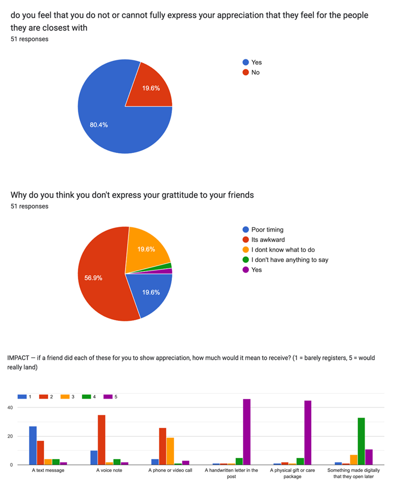
Recorded responses
80.4% selected “Yes” on the expression question; 19.6% selected “No”. Original wording is shown above.
56.9% selected “Its awkward” on the reasons question. “Poor timing” and “I dont know what to do” each show 19.6%. No percentage is inferred for the two small unlabeled slices.
Interpretation limits
The captures do not establish recruitment, demographics, survey routing or collection dates. Both questions display their own 51-response base; this does not establish the unique total sample.
The first question is ambiguously worded. These self-reports motivate further investigation; they are not population rates or evidence that the prototype works.
Original team survey · Figma node 392:30 · Crops show the first two questions; open full unmodified capture.
Survey Findings
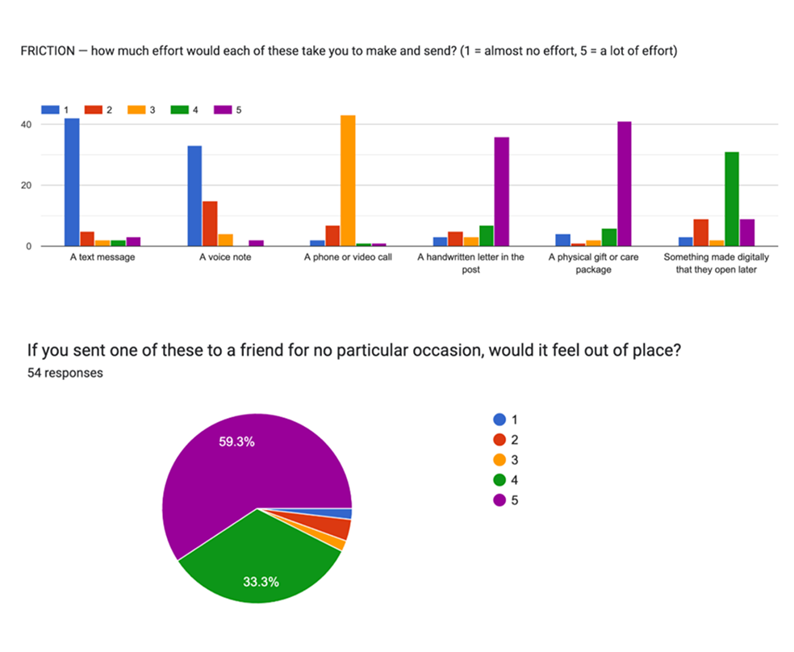
Patterns visible in the charts
Letters and physical gifts have prominent higher-rating bars on both impact and effort. Text and voice show more responses at lower effort ratings.
Something made digitally has a prominent rating-4 bar on both charts. It should not be treated as an effort-free format.
These are qualitative readings of the original distributions. Exact bar counts, chart bases and averages are not provided.
Chart interpretation
The questions concern hypothetical formats: what each would mean to receive and how much effort each would take to make and send.
They do not measure actual sending frequency, observed behaviour or the impact of Warm & Fuzzies. The digital-made format is a broad category, not a test of this prototype.
No chart base, precise bar count or mean is inferred from the images. Both full originals are linked in the source record.
Original team survey · Figma nodes 392:30 and 392:31 · Crops preserve chart labels and anchors; base sizes must not be combined.
Survey Findings
Question wording
“If you sent one of these to a friend for no particular occasion, would it feel out of place?”
Visible results
Numeric category 5: 59.3%
Numeric category 4: 33.3%
No percentage is inferred for the smaller unlabeled slices.
Missing endpoint labels
The 1–5 endpoint labels are absent. We cannot tell whether a high rating means more or less “out of place”.
This chart cannot quantify support for the occasion rule. Its 54-response base must not be assigned to other questions.
Original source, including incomplete scale metadata · Open full unmodified capture.
Research Questions & Method
Working research questions
- What prevents people from expressing appreciation to close friends?
- How do existing formats differ in perceived effort and meaning?
- What does a sender expect an ordinary-day gesture to communicate?
- Would the receiver interpret it differently, including as obligation or pressure?
- Does an authored digital object add value over ordinary text or a voice note?
Proposed next comparison
The existing matched-format proposal holds the appreciation and relationship constant while comparing text, voice and Warm & Fuzzies. It has not been run; details and decision rule appear on A18.
Evidence available for this appendix
| Source | What is available |
|---|---|
| Survey | Two chart-image exports. Original wording, visible response bases, legends and limitations are reproduced on A5–A7. |
| Published research | Studies of gratitude, communication cues and digital ownership. These support adjacent mechanisms, not product outcomes. |
| Design artifacts | Team planning, interface work, illustration and annotated visual feedback. These show design work, not participant testimony. |
| Technical checks | Recorded build, browser and transport checks. These test implementation behaviour. |
Missing primary-method records
Recruitment, demographics, dates, exclusions, routing and raw responses are not established. No completed primary interview or usability result is available.
Working questions and source inventory · Primary-method records remain incomplete.
Problem Exploration
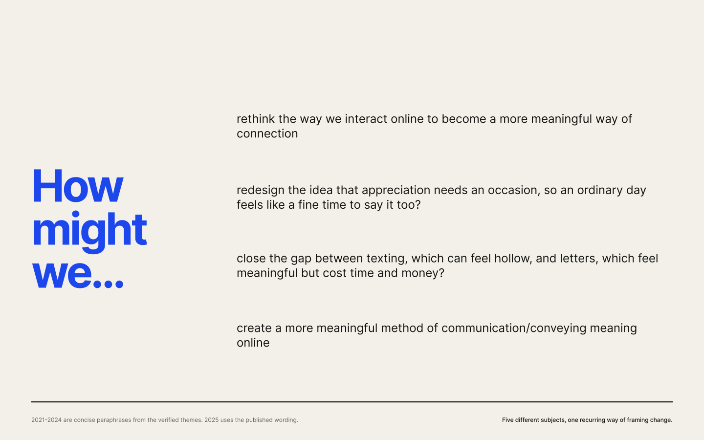
Four formulations of the problem, not four evaluated product concepts. Statements about texts feeling hollow and letters feeling meaningful are working hypotheses, not participant findings.
Original Planning artifact · Full source and crop record retained.
Interface Development
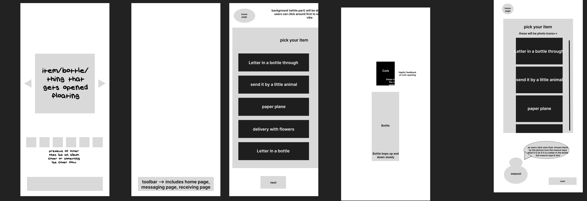
Object and collection
The sketches explore a floating object and previews of previously received objects.
Delivery and interaction
Carrier choices include a bottle, an animal and a paper plane. A bottle sketch notes cork interaction and haptic feedback.
Artifact status
These are design proposals. Co-location on the board does not establish version dates or show that every sketched interaction was built.
Original source crop · Exported 6 September 2026 · Developed sending flow on A15; implemented corrections on A12–A14.
Interaction Directions
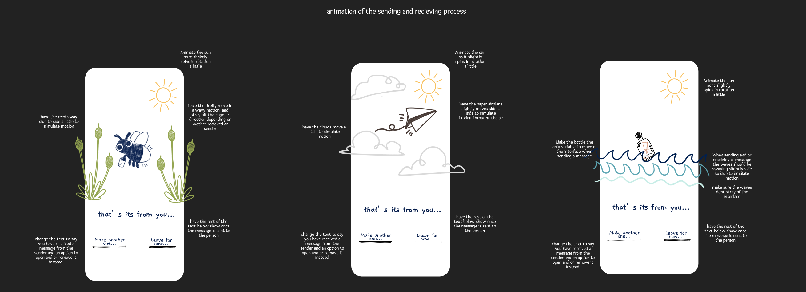
The notes specify carrier motion, contained waves, completion copy after sending, and receiver options to open or remove. These are team-authored directions; the next three pages document concrete feedback and prototype corrections.
Figma page 6:2 · Captured 6 September 2026 · Team-authored interaction directions.
Design Refinement
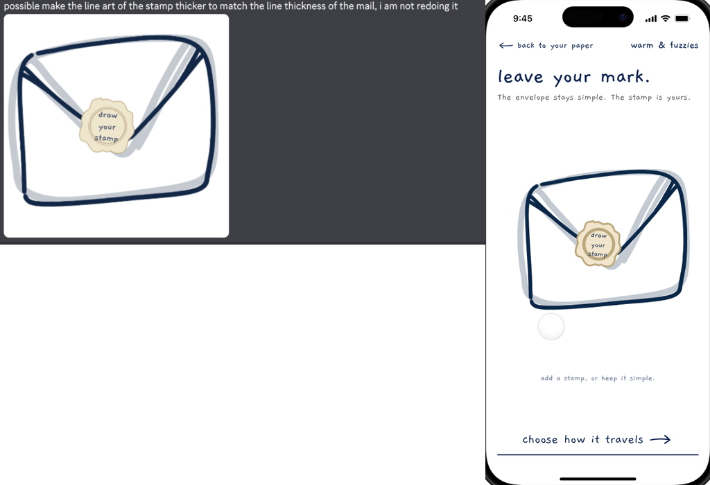
Envelope finishing
Team feedback
The stamp line was too light compared with the envelope.
Recorded change
The phone-scale stamp was strengthened while preserving the original silhouette and palette. Envelope helper text, stamp choices and the travel action also received separate rows.
Original comparison artifact · design-qa.md, “6 September annotated carrier refinement” · Annotated team review and resulting prototype capture.
Design Refinement
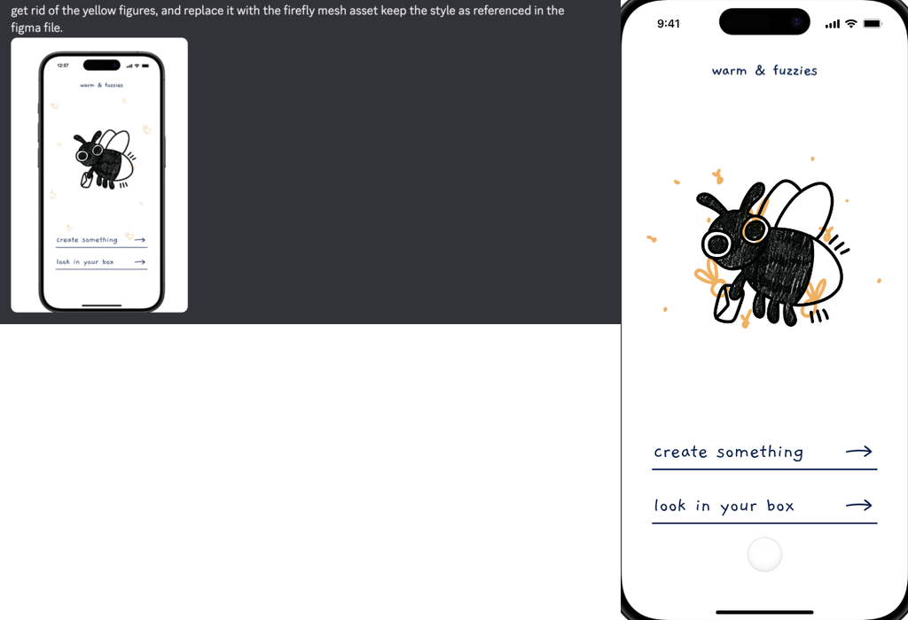
Hub illustration
Team feedback
Replace repeated yellow figures with the authored firefly mesh.
Recorded change
Individually positioned outline figures were replaced with Cecelia’s single authored ochre mesh behind the carrying firefly.
Original comparison artifact · design-qa.md, “6 September annotated carrier refinement” · Annotated team review and resulting prototype capture.
Design Refinement
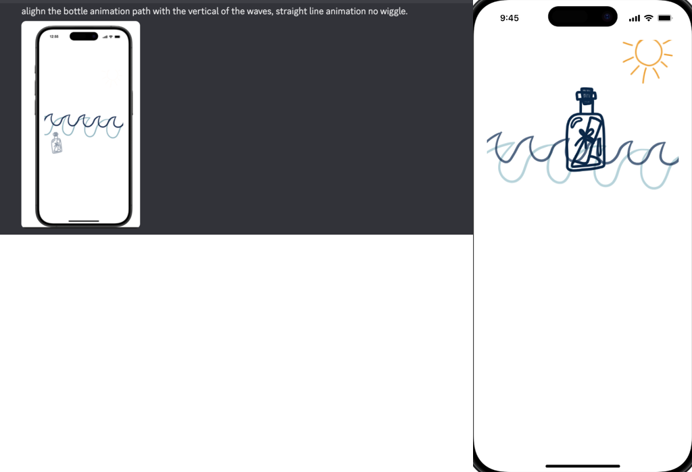
Bottle motion
Team feedback
Align bottle travel to the vertical wave axis; remove the wiggle.
Recorded change
The bottle stays upright on a fixed horizontal position and travels vertically through contained wave layers.
Evidence boundary
The still image records the comparison composition. The accompanying engineering notes and browser checks document the motion change; a still alone cannot demonstrate its timing.
Original comparison artifact · design-qa.md, “6 September annotated carrier refinement” · Annotated team review and resulting prototype capture.
Prototype Flow — Sending
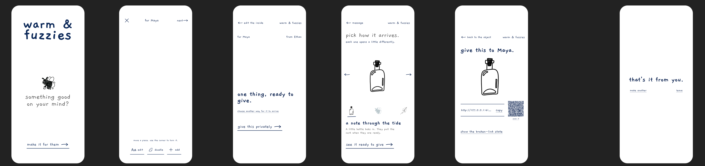
Make and prepare
The source connects the invitation, composition surface and ready-to-give state.
Choose and hand over
A carrier selection leads to a shareable link and QR handoff. The source QR contains a local development address. Use the current prototype links supplied with the main pitch.
End the sender flow
“That’s it from you” closes the depicted sender journey. The receiver flow is shown separately on A16.
Original Figma screen arrangement · Current implementation boundaries on A17–A18.
Prototype Flow — Receiving


Arrival choices
The receiver can open now, defer or remove the arriving object.
Authored content
Opening reveals the composed message and supported content. This is a captured prototype state.
Receiver control
Keeping and removal are local choices. Cross-device continuity and local-media limits are described on A18.
Coded prototype screen captures · Existing local artifacts; exact capture-run provenance not established.
Technical Test Evidence
Recorded implementation checks · 6 September 2026 · These are engineering results, not participant validation.
| Recorded pass | What was checked | Boundary |
|---|---|---|
| Annotated visual refinement 6 focused browser checks | Stamp, carrier and authored-art corrections; TypeScript/Vite build and protected-runtime checks also recorded as passing. | Supports implementation alignment with team feedback. Does not show user preference. |
| Scrapbook implementation 28 integrated browser checks | Styled sender-to-receiver/cabinet round trips, legacy links, repeated materials, local-media rejection and coarse-pointer controls. | Checks exact object preservation and failure handling. Physical camera and microphone capture remain unverified. |
| Motion continuity 51 distinct browser checks in the recorded pass | Integrated and focused checks across folding, carrier arrivals, reduced-motion interruption, existing links, demo routes and phone layouts. Two earlier failures were corrected and rechecked. | Does not establish real-phone comfort or accessible use by intended participants. |
| Live handoff recovery Recorded deployed text-only handoff and demo-route checks | A newly made text-only object opened with its exact message on the deployed receiver; clipboard and invalid/unsupported-object failure paths were reviewed. | Did not reproduce Ethan’s exact reported failure. A final QR scan on a second physical phone remains outstanding. |
Keep the counts separate
These records cover different release points and may overlap. They are not added together, treated as participants, or described as a current rerun.
Remaining human check
Rehearse the exact generated link/QR on a second physical phone and the event network. Check motion comfort and permission-dependent capture.
Sources: design-qa.md, annotated carrier refinement; prototype/IMPLEMENTATION_NOTES.md, 6 September scrapbook, motion and handoff records. Snapshot read during this appendix revision.
Limitations & Next Tests
Prototype boundaries
- Anyone with the bearer link can open it.
- No account, recipient verification, notification, receipt or expiry is implemented.
- Normal keeps use browser storage; demo keeps are session-only.
- Local photo, video, voice, or song files cannot travel across devices.
- Large objects may exceed URL or QR limits.
Evidence boundaries
Survey captures are self-reports with incomplete method metadata. Published studies test adjacent mechanisms. Prototype captures show implementation states.
No completed interview or usability result is presented in this appendix. A working flow does not prove demand, sincerity, reduced pressure or repeated use.
Proposed matched-format comparison
This protocol has not yet been run. It is an existing proposed test, not a new participant finding.
- Hold constant: appreciation content, relationship, receiver and delivery moment.
- Compare: ordinary text, voice note and Warm & Fuzzies.
- Ask the receiver: warmth, clarity, sincerity, pressure and which format they would keep or choose.
- Decision rule: if the authored object adds no meaningful benefit, simplify toward the strongest existing channel.
Technical rehearsal still required
Open the exact edited object on a second physical device and check the event network. The stable demo route is a recovery sample, not a substitute for proving the exact handoff.
Prototype implementation notes and existing proposed comparison · Technical checks and participant research answer different questions.
Hand-drawn Exploration
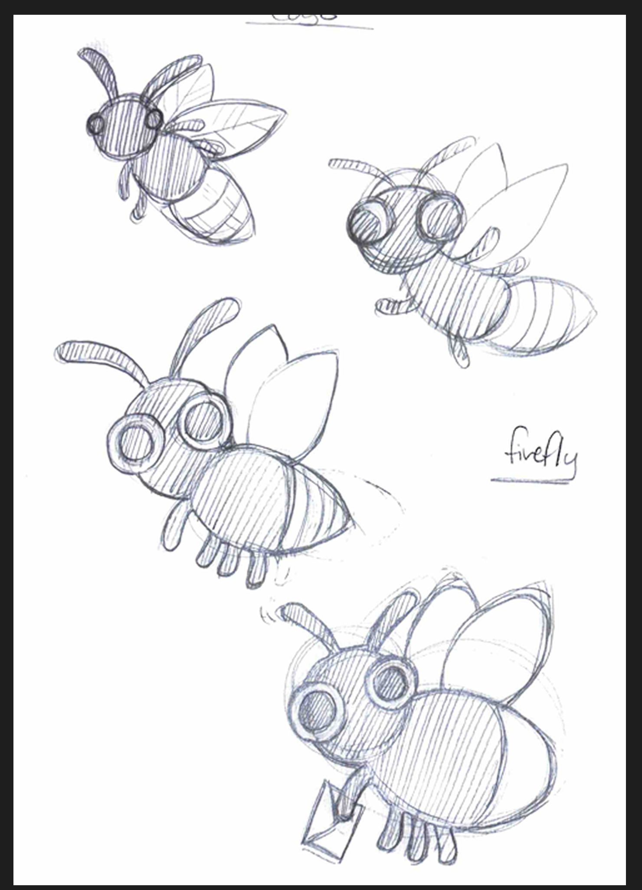
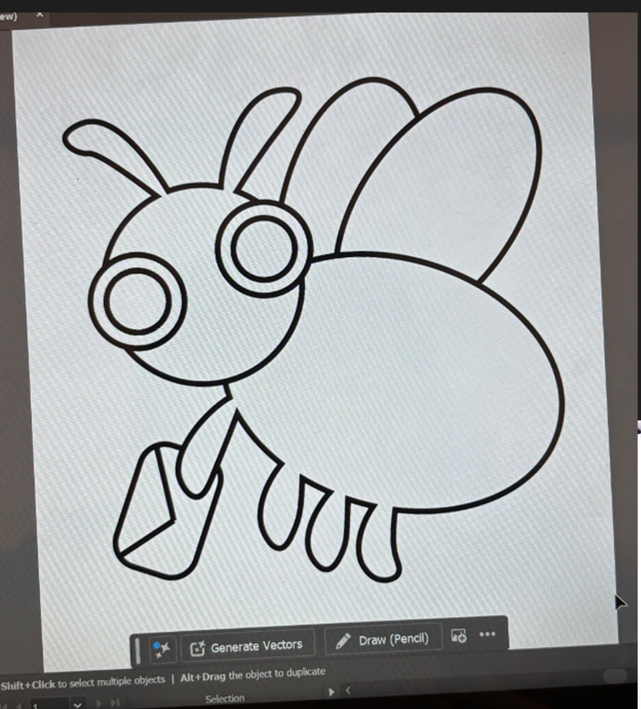
What the drawings explore
The studies vary the eyes, body, wing shapes and pose. The envelope makes the character’s connection to sending appreciation visible.
What carries through
Round eyes, antennae and a compact silhouette recur in the logo and carrier assets. These are original drawing studies.
Cecilia’s original brand work · Figma Branding page 163:54 · Exported 6 September 2026 · Select an image to inspect its source crop.
Logo Development
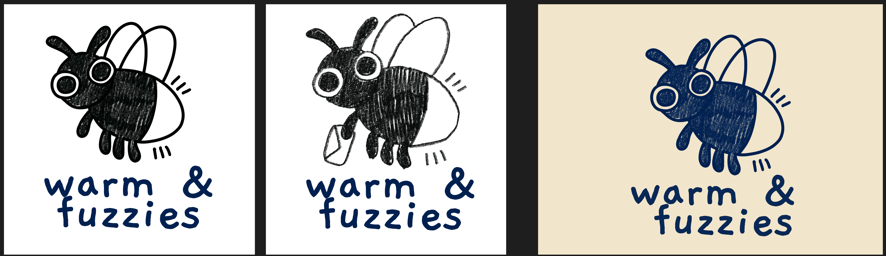
Character
The recognisable eyes and wings remain while the carrying pose links the mascot to the product action.
Line and texture
The row compares a defined outline with a visibly textured fill. The drawn surface is retained as part of the character.
Colour and lockup
Black and navy treatments appear with the warm & fuzzies wordmark. Shown as alternatives, without inferred chronology.
Cecilia’s original brand work · Figma Branding page 163:54 · Exported 6 September 2026 · Select an image to inspect its source crop.
Illustration Exploration
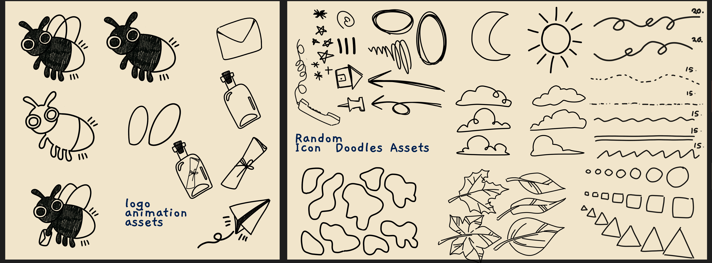
Carrier vocabulary
The envelope, bottle and paper plane give sending distinct visual forms.
Drawn texture
Textured fills, irregular outlines and loose marks carry the same hand-drawn character across assets.
From sheet to interface
The carrier directions appear on A11. Specific refinements are documented on A12–A14.
Cecilia’s original brand work · Figma Branding page 163:54 · Exported 6 September 2026 · Select an image to inspect its source crop.
Paper & Motion Assets
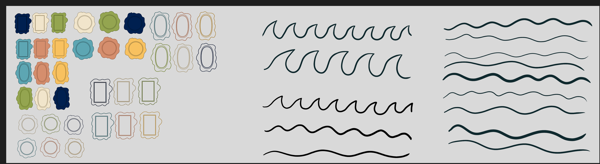
Paper and sealing
Rectangular, oval and circular borders explore how the sender can leave a personal mark.
Stroke and rhythm
The waves vary line weight, curvature and spacing. These are source drawings, not a motion-comfort test.
Recorded refinement
A12 documents the stamp-weight correction. A14 records contained waves and the bottle’s vertical motion.
Cecilia’s original brand work · Figma Branding page 163:54 · Exported 6 September 2026 · Select an image to inspect its source crop.
Colour Exploration
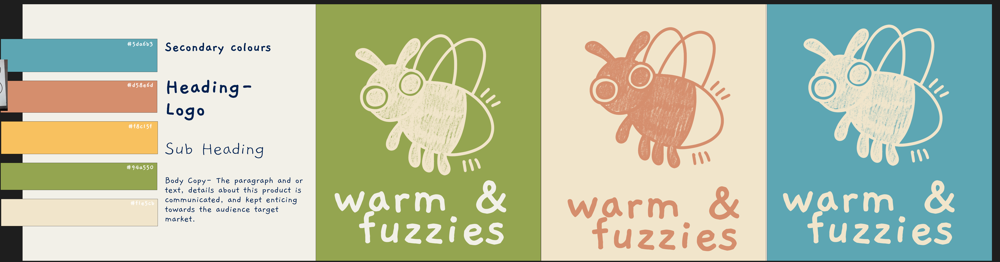
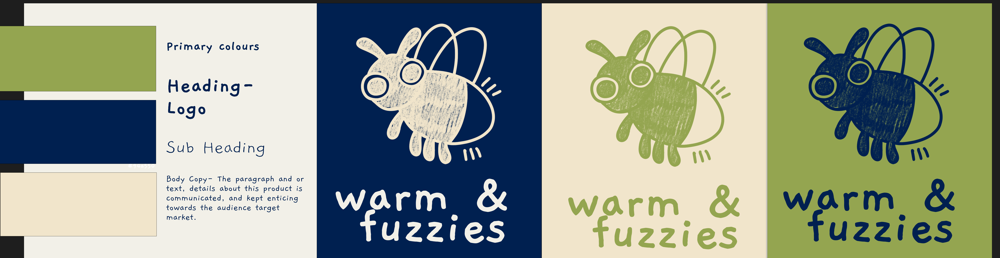
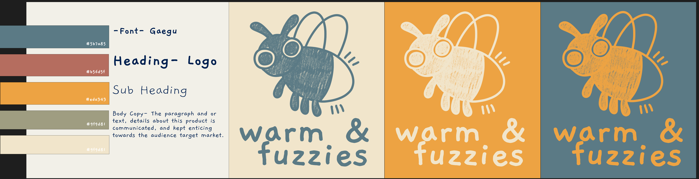
From a broad palette to a focused application
The board compares the same mark on different grounds, making the colour treatment easy to compare.
The main presentation uses white and navy; the prototype retains selected accents. The source swatches are exploration, not proof that every colour was adopted.
No preference test or contrast result is claimed for these alternatives.
Cecilia’s original brand work · Figma Branding page 163:54 · Exported 6 September 2026 · Select an image to inspect its source crop.
Typography & Visual System
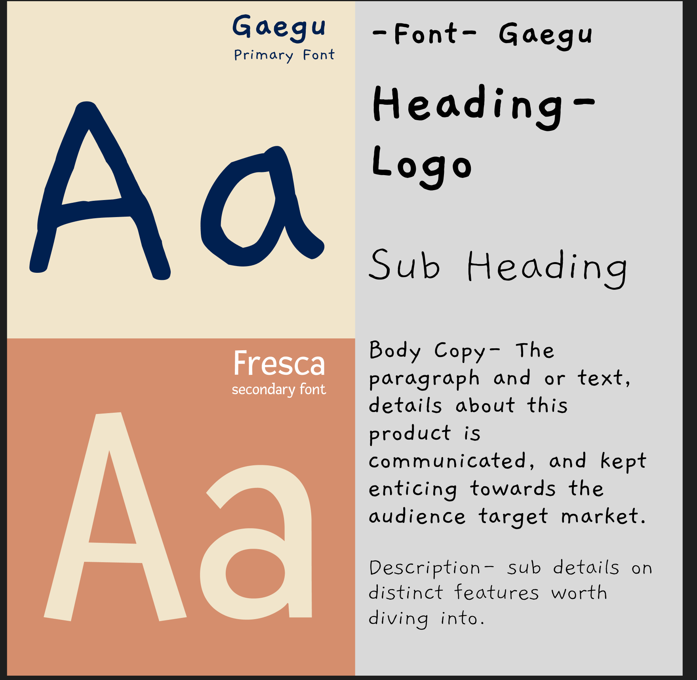

What is retained in the delivered work
- Gaegu: the drawn display voice continues in presentation headings.
- White and navy: a focused presentation palette gives research and source artifacts a consistent setting.
- The carrying firefly and paper objects: the authored assets connect the identity to sending and receiving.
Fresca is shown here as exploration. This appendix uses Arial for dense evidence text. The team’s concrete visual corrections are recorded on A12–A14.
Cecilia’s original brand work · Figma Branding page 163:54 · Exported 6 September 2026 · Select an image to inspect its source crop.
References & Credits
Reference list
- Algoe, S. B., Haidt, J., & Gable, S. L. (2008). Beyond reciprocity: Gratitude and relationships in everyday life. Emotion, 8(3), 425–429.
- Atasoy, O., & Morewedge, C. K. (2018). Digital goods are valued less than physical goods. Journal of Consumer Research, 44(6), 1343–1357.
- Flynn, F. J., & Adams, G. S. (2009). Money can't buy love: Asymmetric beliefs about gift price and appreciation. Journal of Experimental Social Psychology, 45(2), 404–409.
- Kruger, J. et al. (2005). Egocentrism over e-mail: Can we communicate as well as we think? JPSP, 89(6), 925–936.
- Kumar, A., & Epley, N. (2021). It's surprisingly nice to hear you. Journal of Experimental Psychology: General, 150(6), 1231–1250.
- Odom, W. et al. (2012). Technology heirlooms? Considerations for passing down and inheriting digital materials. CHI 2012.
- Sheldon, K. M., & Yu, S. (2022). Methods of gratitude expression and wellbeing. The Journal of Positive Psychology, 17(6), 809–827.
- SUEDE Designathon 2026: official judging criteria. Hot Topic (2025) and FreTo (2024): structural precedents; their findings are not our evidence.
- Kumar, A., & Epley, N. (2018). Undervaluing gratitude: Expressers misunderstand the consequences of showing appreciation. Psychological Science. 10.1177/0956797618772506.
- Team design documentation (6 September 2026): annotated comparison artifacts and design-qa.md; prototype implementation and technical-check records in IMPLEMENTATION_NOTES.md.
- Team survey: original Figma exports, nodes 392:30 and 392:31. Captured 6 September 2026. Response-collection dates and recruitment are not established.
Credits & disclosure
- Team-authored
- Problem framing, product direction, human critique, final selection, and spoken story
- Illustration
- Cecilia’s hand drawings, firefly collection, logo development and team visual assets
- Display type
- Gaegu under the SIL Open Font License
- AI-assisted
- Research discovery and synthesis, counterargument review, implementation, and automated QA. AI output was not used as participant evidence.
- Production tools
- Figma source material; coded browser prototype and HTML presentation; OpenAI Codex for this appendix rebuild and automated checks.